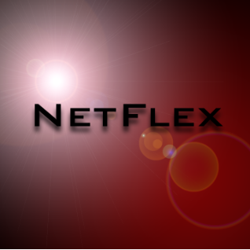

For the Mobile App Development Project, computer science 11th and 12th grade students were asked to create a group app that revolved around the idea that was based off another app of their
interest. For each group there was a junior paired with a senior. Equally collaborating as well as independently, the groups implemented functionality involving a toast pop up, sound, input elements that
permit you to change screen, or image by using XML and Java which are both located in Android Studio.
This app was developed by both Raya Dajani and Maya Ramirez. The DaVinci Lunch App's purpose is for students to have their barcode scanned instead of entering their pin when getting their school lunch. Another function of this app is informing the student the list of foods that they obtained that week.
The Celebrity Quiz app was built by both Koby Wu and Carolina Alfaro. This trivia game displays a series of questions about different celebrities to the user along with four options that may be the answer. If the user succeeded in answering all the questions correctly, then they would be showcase a "You Win" page.
The Stylish App was invented by Daniel Ramirez, Sterling Blagg, and Riley Brady. Their aim for this this app was to assist people on trying on clothes without actually wearing them beforehand so that the user can receive a visual of the how the outfit will appear with the clothes they chose.
Completed by both Ashley Gonzalez and Destiny Ceja was the Sweet Treats App. It was designed as a questionnaire to discover which selected dessert would be the best fit for the user. The question relate to the topic that the users chooses at the beginning of the game which in cookies, cupcakes, cakes, and ice cream.
Designed by both Marisela Gonzalez Prado and Kemai Richardson is The KeMar Music App, which reports the top five songs that are trending from different popular musicians. Other functions this app contains is allowing you to listen to music without any Wifi needed.
The Food Jury app was completed by both Macie Legaspi and Kenneth Garcia. It was designed in order to for the user to see the type of food they will be consuming for dinner by providing the recipe. A function on app is that it randomly selects a food genre for the user, making sure not to display the same meal twice.
Patrivia was produce by both Sara Dajani and Malachi Hudson. Its a trivia game that presents the user questions related to the show Spongebob Squarepants. If the player is able to answer each question that was inquired to them correctly, then afterwards they get informed what character from the television show.
Created by both Zoraiz Hashmi and Christian Curiel was the Dogers vs Giants app. Their inspiration was based on the wrapping up MLB season. To play this game the user acted as a batter who needed to predict the direction the pitcher was going to throw the baseball by clicking either the top, middle, or bottom of the web page screen.

NetFlex was built by Donyae Solo along with Ryan Doherty. The functions incorporated in this app allow you to browse through movie trailers with the purpose in spotting out with ones you enjoyed and that you'll want to save. A bonus feature is also added that permits the user to randomly generate three movies that are related to a category that you chose.